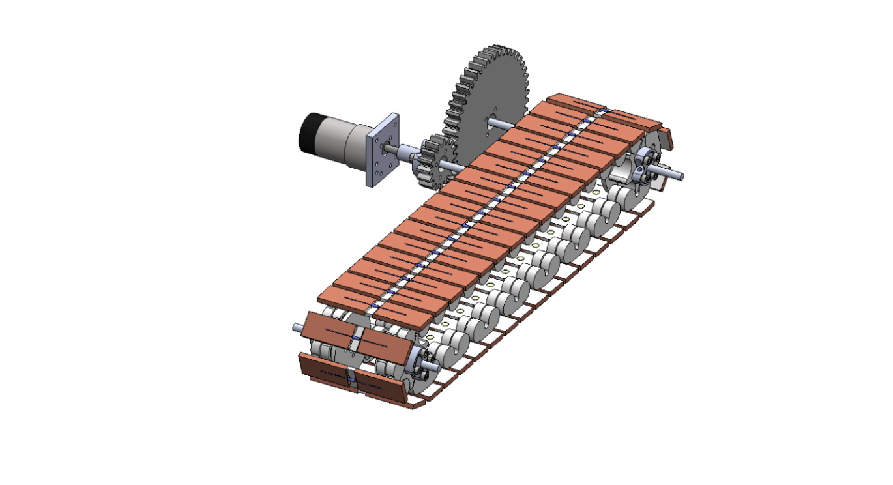
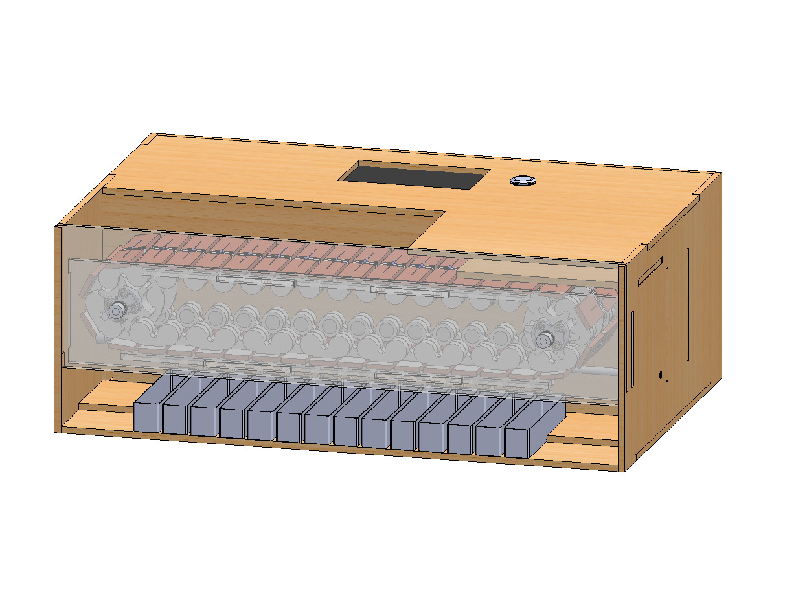
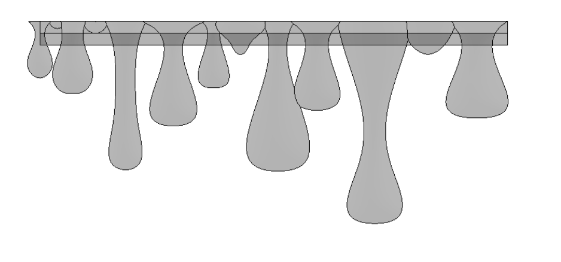

Mechanical Design
System Design
The mechanical team needed to design a system that interfaced seamlessly with the electrical subsystems, moved efficiently, and dropped resistors with price, reliability, and user-experience in mind.
Conveyor Belt System
The conveyor belt system fulfills several design requirements: Securely mount resistors so they can be held upside down and easily removed. Provide two conductive contacts for the resistor terminals to contact. Maintain a reliable vertical position (minimal/zero sag). Minimize friction. Be easy to manufacture and assemble.
To achieve these goals, we designed a 3D-printed modular conveyor belt system. Each module has an indented surface for the resistor to sit in and an embedded magnet underneath to hold the resistor in place. Each side of the module is wrapped in copper foil tape, which provides a clean and reliable electrical connection to the resistor and the measuring prongs. To connect between modules, there are holes for 1/3" roller ball bearings, which allow for a near-frictionless snap-fit connection between modules. Finally, to ensure a consistent vertical position, the middle section of the conveyor belt sits on acrylic rails, which keep the belt from sagging without adding much friction. The system also includes a trigger switch, which activates when a gap between modules passes. This helps sync the software system with the belt movement.
Drivetrain System
To drive the conveyor belt, we use a DC motor with a 4:1 gear reduction connected to the belt. Since we wanted precise motor control, we initially chose a stepper motor, which provides more reliable position control and simpler position tracking than a DC motor. However, we found the stepper motor was unreliable in practice and could not provide sufficient torque of the system. Thus, we used a DC motor without an encoder in our final design, and tracked belt position using a trigger switch that activates at the boundaries between modules. This configuration was much smoother, because the DC motor provided ample torque to drive the relatively low-friction conveyor belt.
Measuring Station Design
The measuring station, where resistors values are measured, posed a small mechanical design challenge. To allow the measuring station to make electrical contact with the copper contacts on each module while still permitting the modules to slide, we implemented a prong design using curved sheet metal contacts.. These contacts spring onto the modules, thus pressing into the copper foil while still allowing the belt to move in the clockwise direction. Extensive testing showed that this approach is a very reliable solution.

Dropoff System
The Dropoff system, which knocks the resistors off of the conveyor belt modules, uses 14 acrylic paddles mounted on a ¼’’ aluminum rod and constrained horizontally with shaft collars. Linear actuators drive these paddles which knock the resistors off of the modules, and into their corresponding bins.
Structure/Housing
The machine housing, with overall dimensions 20x14x7”, is constructed from laser-cut ¼’’ plywood and assembled with dado joints and wood glue to secure the walls, shelves, and mounting panels. The overall structure is divided into three compartments: one for the conveyor belt, one for the gears and linear actuator mounts, and one for the electrical components and wiring. The frontmost panel is made from transparent acrylic, providing a clear view of the conveyor belt.
Aesthetics
The aesthetic design inspiration was inspired by a beehive, echoing the way bees sort and organize within their hive. All of the plywood surfaces are rastered with a hexagonal pattern, and the front acrylic panel is topped with resin-printed honey drips.
Design Considerations
Discussion of your design process including trade-offs made along the way and rationale for the final design you chose (explaining why your choices were superior to other options for reasons such as budget considerations, existing familiarity with a system. availability of parts etc).
Modular System Rationale
To achieve this, we planned a modular conveyor belt system, which was attractive because the resistor could be transported without being picked up. The idea was to make each conveyor belt module able to mount, conduct, and drop resistors easily.
Mounting: Magnets
To mount the resistors to the conveyor belt we utilized embedded magnets. Initially we had the magnets attached to the top of the conveyor belt modules, but in later iterations we chose to embed the magnet underneath the modules both for ease of manufacturing and to prevent the metal from becoming energized by the conductive copper contacts.
Conduction: Copper vs Aluminum
For conduction, we initially tried to use aluminum foil as it was readily available, but this provided a very weak and unreliable electrical connection to the resistor. We then purchased copper foil tape, which has higher electrical conductivity, and this change resulted in a consistently strong and reliable connection.
Actuation: Servos vs Linear Actuators
To drop the resistors, we planned a paddle system to block the resistors, thus pushing them off their magnets and dropping them straight down into the bins. We initially planned to use the provided servos, but because we were going to have so many independently-controlled paddles, we pivoted to buying linear actuators, which draw less electrical current.
Motor Selection: Stepper vs DC
The biggest design challenge was selecting a motor for the conveyor belt system. The core question was whether to use a stepper motor or a DC motor. We knew we needed to precisely track the position of the belt, so we liked the idea of using a stepper motor and were advised that DC motor encoders are tricky to work with. Encoders are prone to losing track of their position, which was crucial for our conveyor belt system. For the Phase 3 prototype, we initially tested the system using a stepper motor in a direct-drive configuration. Without any mechanical step-down, the motor struggled to provide sufficient torque, resulting in minimal rotation and significant stuttering during operation. For our final design, we tried to reuse the same stepper motor, assuming that adding a 4:1 gear reduction would provide enough torque margin to resolve the stalling and make the motor operate smoothly under load. Unfortunately, on the night before Demo Day, the stepper motor caused several issues, including stalling, reversing, creating tons of noise, and causing our microcontroller unit on our PCB to brownout. Fortunately, the design already incorporated a trigger switch in the design that activated between each module, and we had our position encoder solved. Thus, we made a last-minute pivot to a DC motor, which delivered smooth, reliable motion without the stalling or instability observed with the stepper. It became clear in hindsight that, because of the non-negligible torque of the conveyor belt, a DC motor was inherently better suited to the system’s mechanical demands.